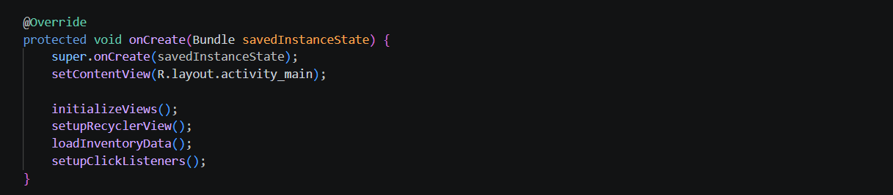
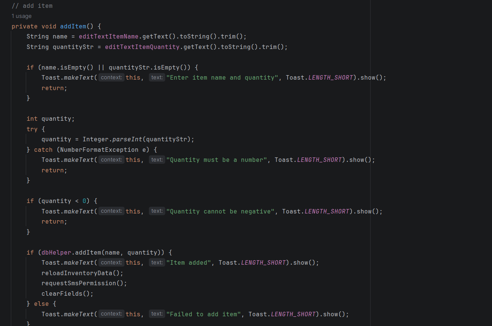
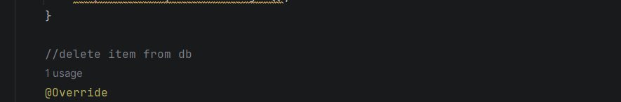
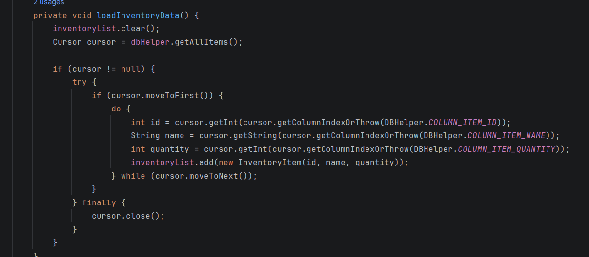
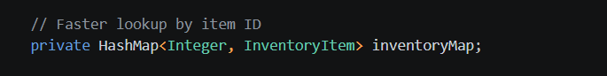
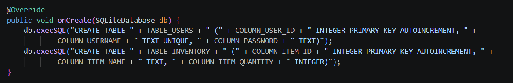
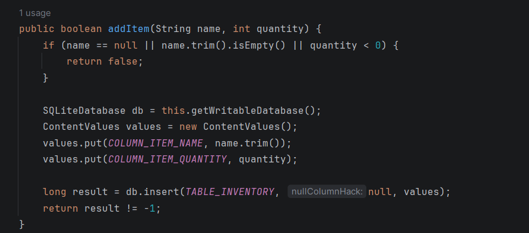
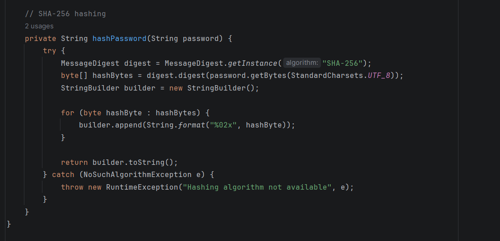

About This Portfolio
This portfolio was created for CS 499 to show my growth throughout the Computer Science program. It includes my professional self-assessment, code review, category artifacts, enhancement narratives, and supporting project files.
My featured artifact is an Android inventory management app that I enhanced in three areas: software design and engineering, algorithms and data structures, and databases.
Portfolio Overview
This site includes my code review video, artifact enhancements, written narratives, and portfolio reflections from the CS 499 capstone course.
Each section highlights a different part of my growth in computer science and shows how I improved my Android inventory application.
Code Review
Artifact Enhancements
Software Design and Engineering
This enhancement focused on improving the structure, readability, and validation of the inventory app. I organized the code more clearly, added input validation, and improved how the app handles add and update actions.
- Improved input validation
- Cleaner add/update logic
- Better method organization
- More readable code structure

Improved input validation added to prevent empty fields, invalid numbers, and incorrect user input..

Reorganized code into cleaner methods, improving readability and making the app easier to maintain.

Made improvements in code structure and comments, making the application more organized and easier to understand.
Algorithms and Data Structures
This enhancement focused on improving how inventory data is stored and managed in the app. I used an ArrayList to hold inventory items, loaded records from the database into objects, and added update tracking to manage item changes more clearly.
- ArrayList used to manage inventory items
- Inventory data loaded into objects
- Update tracking with item ID
- Cleaner data handling in the app
Created search functionality that filters inventory items based on user input, demonstrating how data can be processed efficiently

Sorting logic used to organize inventory items by name or quantity, improving how data is displayed to the user.

Demonstrated the use of data structures like ArrayList and HashMap to store and manage inventory items more efficiently.
Databases
This enhancement focused on improving the SQLite database by strengthening the table structure, validating inserted data, and adding better security for user information.
- Improved database table structure
- Validation before inserting data
- Password hashing for security
- Better overall database functionality

Database tables were created to store user and inventory information.

Now code supports full CRUD functionality.

Implementation of password hashing to improve security and protect user information.
Professional Self-Assessment
This section introduces my portfolio and reflects on the skills I developed throughout the Computer Science program.
I feel I have built a solid foundation in coding, problem solving and software development due to the CS program. While working through my courses and developing my ePortfolio, it has allowed me to identify my strengths in my technical skills and gain confidence in preparing for a career in the field. It also gave me a clearer understanding of how the concepts that I have learned connect and can be applied to real situations.
One of the ways this program has helped me grow is in software development. For example, I created an Android inventory app that allows users to register, login, and manage inventory items using a SQLite database. While building and improving this app, I learned how to organize code, improve functionality and make my application more user friendly. Enhancing this project for my ePortfolio also allowed me to focus on writing cleaner code, improving validation and making the overall design more efficient and easier to maintain. These experiences have helped me feel more confident in my ability to build and improve software.
I also developed a better understanding of data structures and algorithms. Because of the assignments and projects, I have learned how to organize and manage data using structures like Array Lists and applying logic such as searching and sorting. In my inventory app, I added features that allowed users to search for items and sort them which helped improve both performance and usability. This showed me how important it is to choose the right data structures and algorithms when designing an app.
I also developed a better understanding of data structures and algorithms. Because of the assignments and projects, I have learned how to organize and manage data using structures like Array Lists and applying logic such as searching and sorting. In my inventory app, I added features that allowed users to search for items and sort them which helped improve both performance and usability. This showed me how important it is to choose the right data structures and algorithms when designing an app.
Another important skill I gained is working with databases. I used SQLite to store and manage user and inventory data and implement CRUD operations. This experience helped me understand how data is stored, accessed, and updated in an app. It also showed me the importance of maintaining accurate and reliable data.
Security is another area I become more aware of throughout the program. For example, I implemented password hashing in my app to protect user information and added input validation to prevent invalid or harmful data from being entered. These experiences helped me begin developing a security mindset by thinking about how systems can be protected and how vulnerabilities can be prevented.
In addition to technical skills, I improved my communication and collaboration abilities. While I did not work directly in team based projects, I gained experience communicating my ideas clearly though assignments, project documentation and code review video. I also learned how important it is to explain technical concepts in a way that different audiences, including non-technical people, can understand. These skills will be important when working in professional; environments where teamwork and communication are essential.
In addition to technical skills, I improved my communication and collaboration abilities. While I did not work directly in team based projects, I gained experience communicating my ideas clearly though assignments, project documentation and code review video. I also learned how important it is to explain technical concepts in a way that different audiences, including non-technical people, can understand. These skills will be important when working in professional; environments where teamwork and communication are essential.
My ePortfolio brings all these skills together and demonstrates my overall growth in computer science. The main artifact in my portfolio is my Android inventory app, which I enhanced in three key areas: software design and engineering, algorithms and data structures, and databases. Each enhancement highlights a different set of skills, such as improving code structure, adding search and sorting features, and strengthening database functionality. Together, these artifacts show my ability to analyze, improve and apply technical solutions.
Overall, this ePortfolio represents my progress throughout the computer science program and shows that I am prepared to enter the field with a solid foundation in programming, problem solving and application development. It also reflects my ability to continue learning and improving my skills as I move forward in my career.
View Self-AssessmentEnhancement Narratives
These narratives explain how I improved each category artifact and what I learned from the process.
Software Design and Engineering
This narrative explains how I improved code structure, validation, and readability in my app.
1. Briefly describe the artifact. What is it? When was it created? The artifact I chose for this milestone is my Android inventory app that I created earlier in the CS 360. The app lets users create an account, login, and manage inventory items by adding or deleting them. It also uses SQLite database to store data and has SMS for notifications. 2. Justify the inclusion of the artifact in your ePortfolio. Why did you select this item? What specific components of the artifact showcase your skills and abilities in software development? How was the artifact improved? I chose this project because it shows a lot of different skills all in one place. It’s not just one small piece of code but a full app that has user interactions, database use and multiple classes working together. I also picked it because I knew there were areas I could improve. The app worked but wasn’t very clean or organized in some places. Some parts of the app that really show my skills are the login system, the inventory list using RecyclerView and how the app connects to the database using the DBHelper class. For this milestone, I focused on improving the overall structure and design of the app. One of the biggest changes I made was cleaning up how the code is organized. For example, MainActivity java file had a lot going on as it handled user input, database calls and SMS features all in one place. I improve this by breaking things into smaller helper classes and methods. This makes the code easier to read and easier to update later. I also improved input validation. In the original version, the app would try to turn user input into a number without checking if it was valid. That could cause the app to crash. I fixed that by adding checks to make sure the input is correct before using it. Another improvement was removing hardcoded values, like the phone number used for SMS. Instead of having it directly in the code, I changed it so it can be stored and updated more easily. This makes the app more flexible and more realistic. I also made the code easier to understand by organizing it better and adding comments where needed. 3. Did you meet the course outcomes you planned to meet with this enhancement in Module One? Do you have any updates to your outcome-coverage plans? I think the improvements I made match the course outcomes I planned in Module One. I was able to take an existing project, look at what was working well, and improve it using better software design practice. This project shows that I can go beyond writing code that works and actually focus on making code cleaner and more efficient. I also showed that I can improve structure, reduce complexity, and handle user input more safely. At this point, I don’t think I need to change my original plan to much. I just need to keep building on these improvements and explain them 4. Reflect on the process of enhancing and modifying the artifact. What did you learn as you were creating it and improving it? What challenges did you face? Working on this enhancement helped me better understand the importance of writing clean, maintainable code. One of the biggest things I learned is that just because code works does not mean it is well designed. The original version of my application was functional, but it was not as organized as it could be. One challenge I faced was figuring out how to break apart larger sections of code into smaller, more manageable pieces without breaking the functionality of the app. It took some trial and error to make sure everything still worked correctly after refactoring. Another challenge was improving input validation in a way that was effective and user friendly. I had to think about different types of invalid input and how the application should respond to them.
Download NarrativeAlgorithms and Data Structures
This narrative explains how I improved data handling, organization, and efficiency using data structures and algorithms.
1. Briefly describe the artifact. What is it? When was it created? The artifact I used for this category is my Android inventory management app that I created earlier in the CS program. The app allows users to login, add and delete inventory items and store data using SQLite database. I originally built this app in a previous course where the goal was to create a functional mobile app that connects a user with store data. I chose this artifact because it already had a basic data structure in place using an ArrayList to store inventory items, which made it a good starting point for improvement. Even though the app worked, the way it handled data was pretty simple and not very efficient. This project gave me the opportunity to show my skills in algorithms and data structures by improving how data is stored, searched and sorted. One min improvements I made was adding sorting and filtering functionality. I created methods to sort items by name and by quantity, which shows my understanding of using organizing data efficiently. I also added a search feature that filters items based on user input, which demonstrates how to work with lists and through data. Another improvement was adding a HashMap to store items by their ID for faster lookup. This shows my understanding of choosing the right data structure depending on the situation. I also implemented a binary search method for finding items by name, which helped me demonstrate a more advanced algorithm compared to simple looping. I believe I met the course outcomes I planned for this category. I was able to demonstrate my understanding of data structures like ArrayList and HashMap, and I applied algorithms like sorting, filtering, and binary search. These changes show that I can not only use data structures, but also improve how data is processed and accessed. I also showed that I can analyze an existing project and make meaningful improvements to it. A this point, I don’t think I need to make major changes to my outcome plan. I may continue improving how I explain these enhancements in my final ePortfolio, but overall I feel like I am on track. Working on this part of the project helped me understand the importance of choosing the right data structure and algorithm for the task. Before this, I mostly using simple lists without thinking much about efficiency or performance. One thing I learned is that even small improvements, like sorting or filtering, can make a big difference in how an app feels and works. I also learned how to organize code better by creating helper classes, like Inventory Utils, instead of putting everything in one file. One challenge I faced was making sure everything still worked correctly after adding new logic. For example, after adding sorting and filtering, I had to make sure the RecycleView updated properly and didn’t break the existing functionality. It took some trial and error to get everything working together.
View Full NarrativeDatabases
This narrative explains how I improved database structure, CRUD functionality, and security using password hashing.
1. Briefly describe the artifact. What is it? When was it created? The artifact I used for category is my Android inventory app that I created in CS 360. The app lets users create an account, login and manage inventory items using a SQLite database. It stores user information and item data and displays the data in a RecyclerView. For this milestone I focused on improving database design, security and overall functionality. I chose this artifact because it already had a working database but needed improvement. In the original version, passwords were stored in plain text and the app only supported adding and deleting items. One of the biggest changes I made was adding password hashing instead of storing passwords. This was important because it makes the app more secure. I also added full CRUD functionality by adding an update feature, so users can now edit existing inventory items instead of just deleting or readding them. I also improved how database handles data by adding validation and making sure the results are sorted when displayed. These updates helped make the app more reliable and user friendly. I think I met the course outcomes I planned for the category. I demonstrated that I can work with databases, improve data security, and implement full CRUD operations. I also showed that I can take a previous project and make it better instead of starting from scratch. I don’t think I need to make major changes to my outcome plan. Working on this enhancement helped me realize how important database security is. Before this, I didn’t think much about how passwords were stored but learning about hashing made me understand why this is necessary. I also learned that databases aren’t just about storing data but also how that data is handled, validated, and retrieved. Even small improvements, like adding validation or sorting results, can make a big difference in how the app works. One challenge I ran into was making sure everything was still working after I changed the database code. For example, once I added password hashing, I had to make sure login and registration still worked. I also had to test the update feature to make sure it didn’t break anything.
Download NarrativeContact Information
Name: Toni Britt
Email: toni.britt@snhu.edu
GitHub: GitHub Profile
LinkedIn: LinkedIn Profile